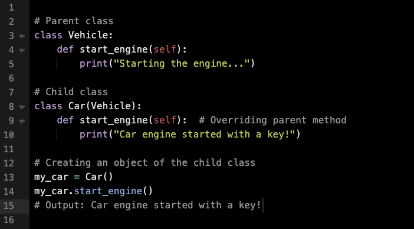

Inheritance
Inheritance is a fundamental concept in object-oriented programming where a subclass (child class) inherits attributes and behaviors from a parent class.
This allows a subclass (or child class) to reuse the attributes and methods of a parent class, eliminating the need for redundant implementation. In real-world terms, it represents an "IS-A" relationship.

This example shows how the Car class inherits from the Vehicle class, allowing it to reuse the brand attribute.
Overriding Methods
In a child class, a method from the parent class is overridden when a method with the same name is defined within the child class.
Private Variables
If instance variables from the parent class should not be inherited by the child class, they can be made inaccessible by prefixing them with double underscores (__). This applies name mangling, which renames the variable by appending _ClassName before it. Attempting to access such variables directly from the child class will result in an “AttributeError.”
isinstance() and issubclass()
Python has two built-in functions that work with inheritance:
- isinstance()
- issubclass()
isinstance() checks an instance's type:
isinstance(obj, int)
This will return True only if obj is an instance of the int class or any class that inherits from int.
issubclass() checks class inheritance:
print(issubclass(bool, int)) # True
print(issubclass(float, int)) # False
Because bool is a subclass of int, the result is True. On the other hand, since float is not a subclass of int, it returns False.
Types of Inheritance
Single Inheritance
Single inheritance occurs when a child class inherits from only one parent class. All the previous code examples demonstrate
single inheritance.
Multiple Inheritance
When a child class inherits from multiple parent classes, it is called multiple inheritance.
Output: Hello! I am Leo, a Panthera leo living in the Savannah.
Multilevel Inheritance
When a derived class inherits from another derived class.

Output: Tesla Model S - 2022 - Battery: 100 kWh
Hierarchical Inheritance
More than one derived class is created from a single base class:
Output: Language: C, Popularity: High
Output: Language: Ruby, Popularity: Medium